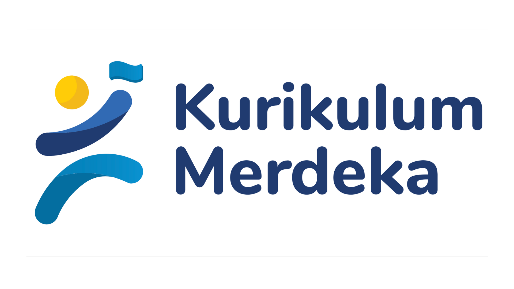
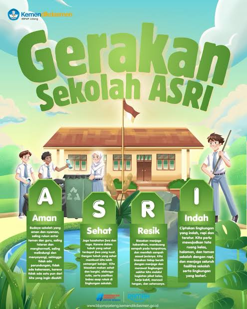

Kurikulum Merdeka
Kurikulum
SMPN 72 Jakarta menerapkan Kurikulum Merdeka yang berpusat pada peserta didik, didukung pembelajaran berdiferensiasi dan agenda akademik yang terstruktur setiap semester.
Struktur Kurikulum
Pembelajaran inti SMPN 72 Jakarta disusun mengacu pada Kurikulum Merdeka dan kebutuhan perkembangan peserta didik.
Akidah, akhlak, dan ibadah
Kewarganegaraan dan karakter
Literasi, teks, dan komunikasi
Numerasi dan penalaran
Fisika, kimia, dan biologi dasar
Geografi, sejarah, dan ekonomi
Komunikasi global
Kebugaran dan sportivitas
Ekspresi dan kreativitas
Teknologi dan berpikir komputasional
Agenda Akademik
Agenda akademik disusun agar peserta didik, orang tua, dan guru memiliki acuan yang jelas terhadap tahapan pembelajaran dan asesmen.
Catatan
Jadwal rinci dapat berubah sesuai kalender pendidikan Dinas Pendidikan DKI Jakarta dan akan diinformasikan melalui surat resmi sekolah.
Masa Pengenalan Lingkungan Sekolah (MPLS), penyusunan kesepakatan kelas, dan asesmen diagnostik.
Evaluasi capaian pembelajaran pertengahan semester disertai umpan balik bagi peserta didik.
Pembelajaran berbasis projek lintas mata pelajaran dengan tema yang berganti setiap semester.
Penilaian akhir semester, pengolahan nilai, serta pembagian laporan hasil belajar kepada orang tua.
Jeda antar semester, peringatan hari besar nasional, class meeting, dan kegiatan akhir tahun ajaran.
Program Akademik
Empat program yang memperkuat pembelajaran inti dan mengembangkan potensi peserta didik.

Kurikulum Merdeka

Kokurikuler
Literasi & Numerasi

Adiwiyata